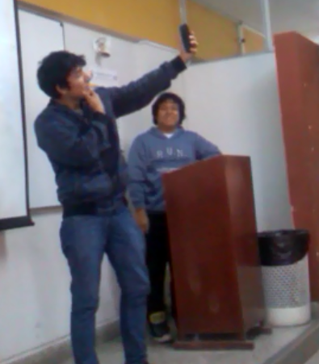
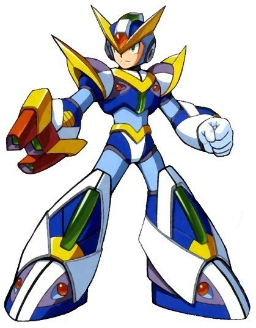

<nav class="navbar navbar-expand-lg navbar-light mat-elevation-z2 example-header" style=" text-align: center; background: #003c8f; color: white">
    <a mat-button (click)="sidenav.toggle()">
        <i style="color:white" class="material-icons"> menu </i>
    </a>
    <a mat-button class="navbar-brand mat-button">
        <span style="color: white; font-size: 1.3em"><i class="material-icons docs-angular-logo">assignment</i>
            Percepción de la Calidad en la Facultad de Ingeniería de Sistemas e Informática </span></a>
</nav>

<mat-sidenav-container class="sidenav-container">
<!-- <mat-sidenav #sidenav mode="side" opened class="example-sidenav" style="background: rgb(34,69,98,90%)"> -->
    <mat-sidenav #sidenav mode="side" opened class="example-sidenav" style="background:rgb(44, 62, 80); z-index: -1;">
        <hr>
        <div style="height: 215px;" class="text-center">
            <p *ngIf="usuario" class="mt-1" style="color: white; font-size: 16px; font-family: sans-serif; font-weight: bold">Bienvenido</p>
                
            <p *ngIf="usuario" style="color: white; font-size: 16px; font-family: sans-serif; font-weight: bold">Alejandro Villanueva</p>
            <p *ngIf="administrador" class="mt-1" style="color: white; font-size: 16px; font-family: sans-serif; font-weight: bold">Bienvenido</p>
                
            <p *ngIf="administrador" style="color: white; font-size: 16px; font-family: sans-serif; font-weight: bold">Andy Yupanqui</p>
            <button mat-raised-button color="warn" (click)="logout()">Cerrar Sesión</button>
        </div>
        <mat-divider></mat-divider>
        <mat-toolbar style="background: transparent">

            <mat-toolbar-row *ngIf="administrador" id="btn-preguntas" [routerLink]="[ '/home/preguntas']" routerLinkActive="active-link">
                <span *ngIf="isExpanded || isShowing" style="color: white">Preguntas</span>
                <span class="example-spacer"></span>
                <i class="material-icons" style="color: white">help</i>
            </mat-toolbar-row>
            
            <mat-toolbar-row *ngIf="usuario" id="btn-general" [routerLink]="[ '/home/general']" routerLinkActive="active-link">
                <span *ngIf="isExpanded || isShowing" style="color: white">General</span>
                <span class="example-spacer"></span>
                <i class="material-icons" style="color: white">poll</i>
            </mat-toolbar-row>

            <mat-toolbar-row *ngIf="usuario" id="btn-capacidad-respuesta" [routerLink]="[ '/home/capacidad-respuesta']" routerLinkActive="active-link">
                <span *ngIf="isExpanded || isShowing" style="color: white">Capacidad de Respuesta</span>
                <span class="example-spacer"></span>
                <i class="material-icons" style="color: white">poll</i>
            </mat-toolbar-row>

            <mat-toolbar-row *ngIf="usuario" id="btn-empatia" [routerLink]="[ '/home/empatia']" routerLinkActive="active-link">
                <span *ngIf="isExpanded || isShowing" style="color: white">Empatía</span>
                <span class="example-spacer"></span>
                <i class="material-icons" style="color: white">poll</i>
            </mat-toolbar-row>

            <mat-toolbar-row *ngIf="usuario" id="btn-fiabilidad" [routerLink]="[ '/home/fiabilidad']" routerLinkActive="active-link">
                <span *ngIf="isExpanded || isShowing" style="color: white">Fiabilidad</span>
                <span class="example-spacer"></span>
                <i class="material-icons" style="color: white">poll</i>
            </mat-toolbar-row>

            <mat-toolbar-row *ngIf="usuario" id="btn-seguridad" [routerLink]="[ '/home/seguridad']" routerLinkActive="active-link">
                <span *ngIf="isExpanded || isShowing" style="color: white">Seguridad</span>
                <span class="example-spacer"></span>
                <i class="material-icons" style="color: white">poll</i>
            </mat-toolbar-row>

            <mat-toolbar-row *ngIf="usuario" id="btn-tangibilidad" [routerLink]="[ '/home/tangibilidad']" routerLinkActive="active-link">
                <span *ngIf="isExpanded || isShowing" style="color: white">Tangibilidad</span>
                <span class="example-spacer"></span>
                <i class="material-icons" style="color: white">poll</i>
            </mat-toolbar-row>

        </mat-toolbar>
        <mat-divider></mat-divider>
    </mat-sidenav>
    <mat-sidenav-content>
        <router-outlet></router-outlet>
    </mat-sidenav-content>
</mat-sidenav-container>